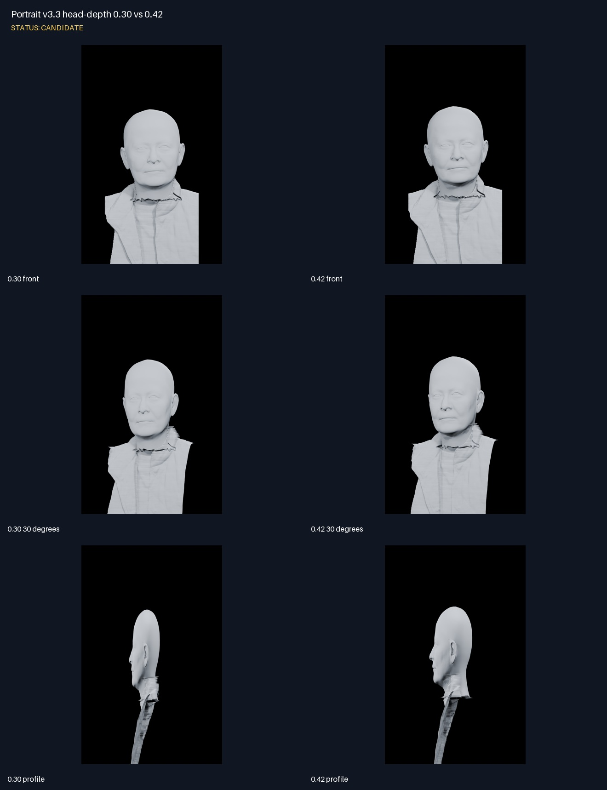
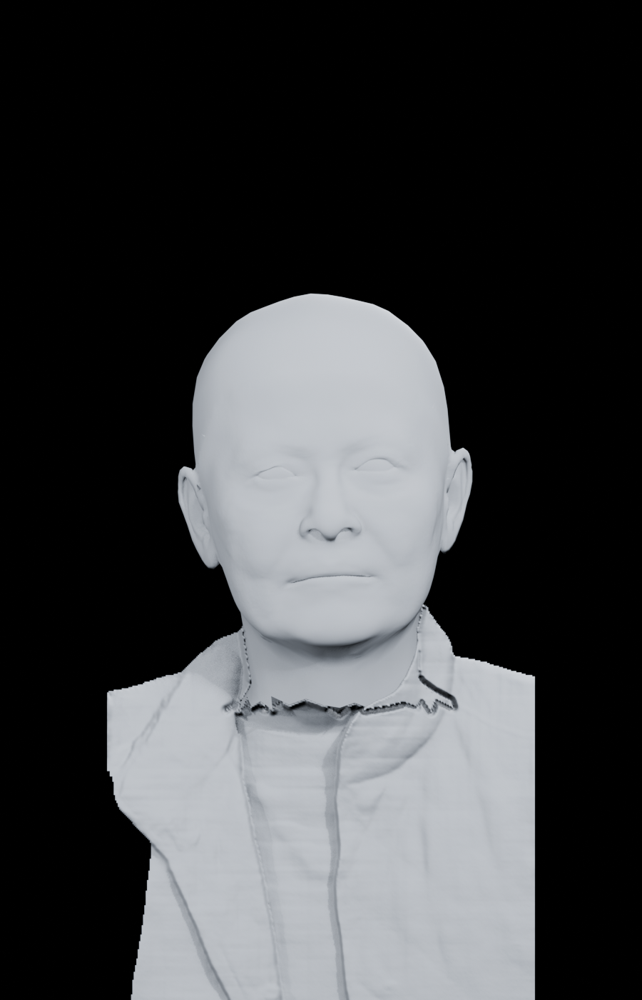
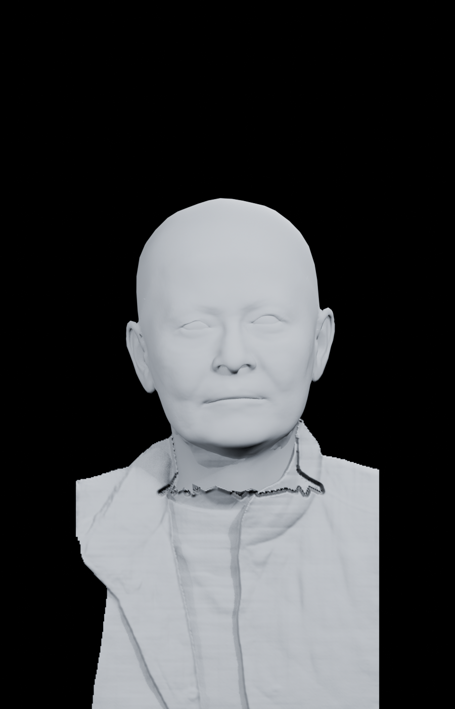
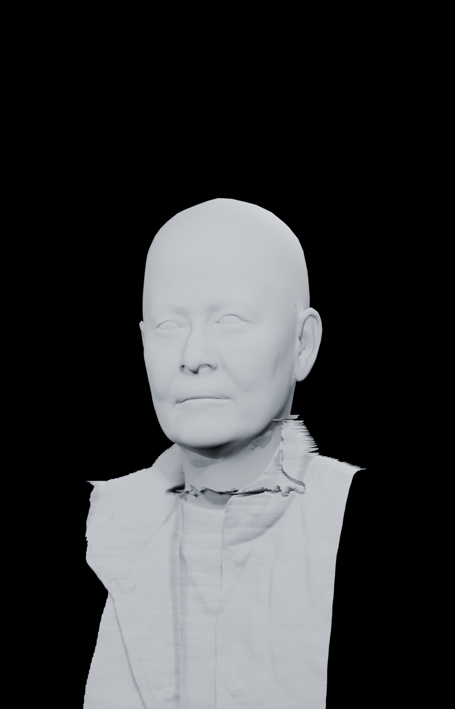
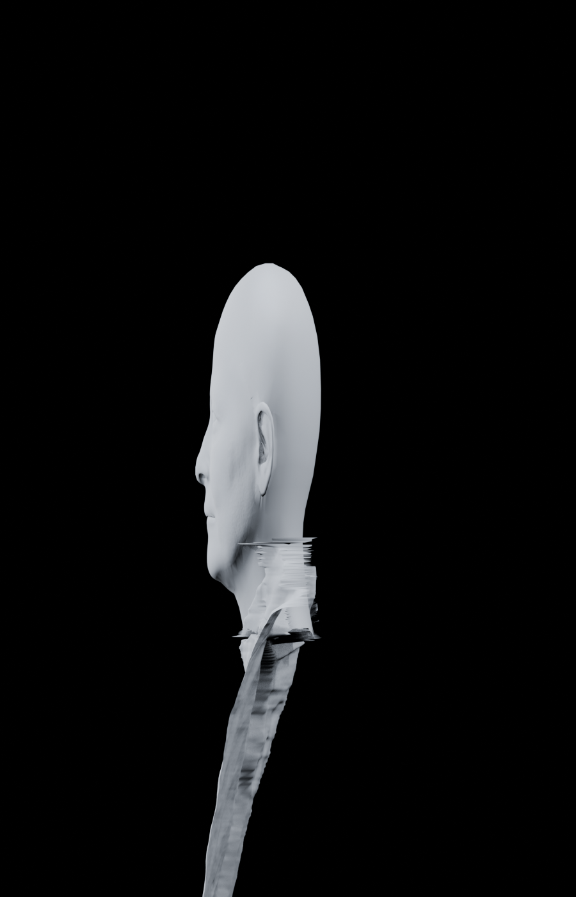
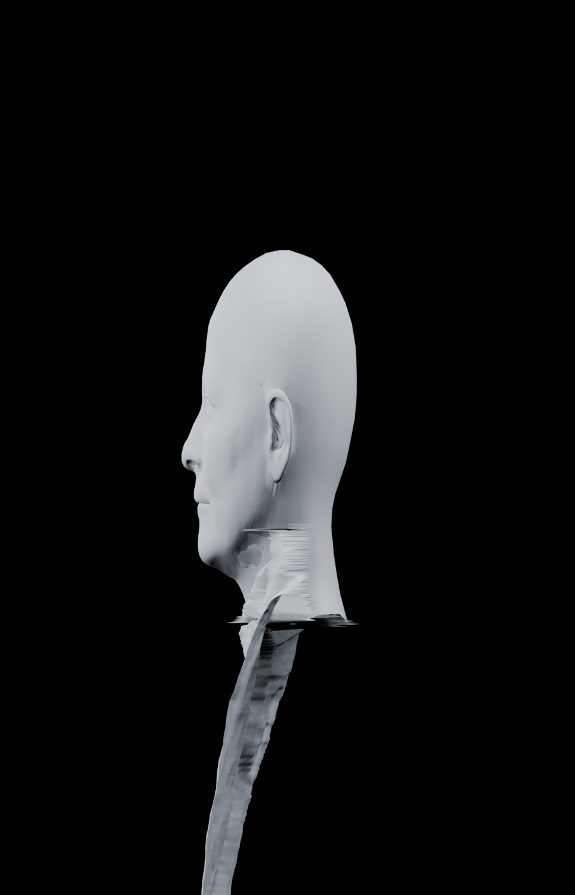

Portrait v3.3 head-depth 0.30 vs 0.42
Status: CANDIDATE
- Only the native HRN head-depth span changed from 0.30 to 0.42.
- 0.42 visibly improves cranial depth in profile while retaining the front-facing facial form.
- Neck-to-garment stitching remains experimental and is not accepted.

Contact sheet
0.30 front

0.42 front
 0.30 30 degrees
0.30 30 degrees

0.42 30 degrees

0.30 profile

0.42 profile